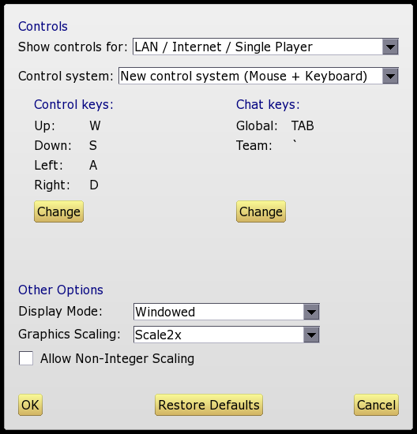

9. Game Options

On this screen you can configure the game controls and other settings. Note that all settings will be saved to disk and automatically re-loaded the next time you start Knights.
Controls
This is the main part of the options screen. Here you can select whether to use the "new" or "old" control system (see Controls for details) and/or re-assign the keys used. If you choose the "new" control system you can also specify whether the tool tips should be displayed when you hover your mouse over the Action Bar.
Controls for split screen games are assigned separately. Note that only the "old" control system can be used for split screen games.
Unlike previous versions of Knights, there are no restrictions on which keys can be used for controls. However you should avoid TAB as this is used for chat, and ESCAPE as this is used to bring up the quest menu and quit the game.
Other Options
- Display Mode: Select whether to run in full screen or windowed mode. Note that in windowed mode the window is fully resizable, and the graphics will be automatically rescaled to fit the window size.
- Graphics Scaling: The original Knights graphics are mostly 16x16 images which need to be scaled up for modern displays. By default the game uses the Scale2x method by Andrea Mazzoleni to accomplish this. The alternative option is "pixellated" which just directly scales up the images, resulting in more "blocky" looking graphics.
- Allow Non-Integer Scaling: By default the graphics will be scaled only to an integer multiple of their original size. This produces the best-looking images, but at certain screen resolutions it may result in unused space around the edges of the display. By activating this option, the graphics will be re-sized to fill the entire screen, even if this means scaling them by a non-integer ratio.